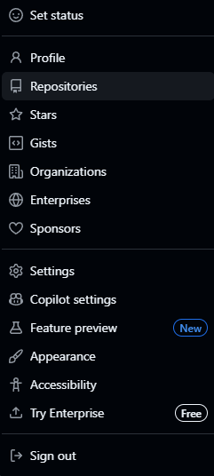
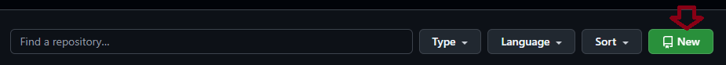
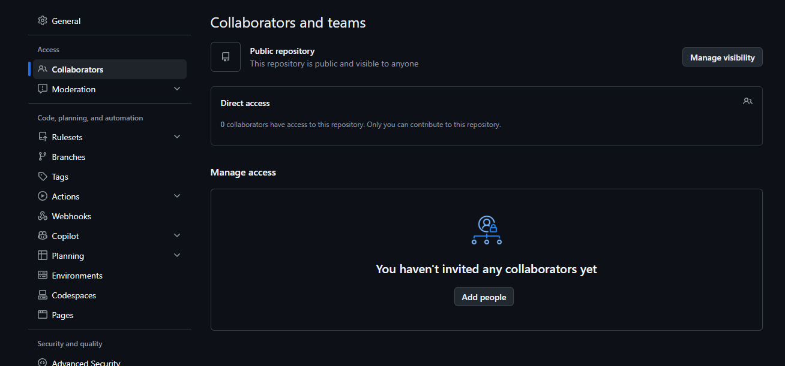

Versionamento com Git
Do Git instalado ao projeto no GitHub, passo a passo.
Instalar o Git
- Baixe o instalador em git-scm.com/install/windows
- Instale com as opções padrão.
✓ Verificar a instalação
> git --versionCriar o repositório no GitHub
- No GitHub, clique na sua foto (canto superior direito) e vá em Repositories.

- Clique em New.

- Preencha o Repository name * (campo obrigatório).
+ Adicionar colaboradores (opcional)
Para outra pessoa enviar alterações (git push) ao repositório, ela precisa ser colaboradora. No repositório, vá em Settings → Collaborators e clique em Add people.

Iniciar o Git no projeto
Na pasta do projeto, execute:
> git init
Initialized empty Git repository in C:/.../meu_projeto/.git/Primeiro commit e envio
# Adiciona todos os arquivos
> git add .
# Cria e adiciona o README
> ni README.md
> git add README.md
# Salva a versão
> git commit -m "first commit"
# Renomeia a branch para main
> git branch -M main
# Conecta ao repositório do GitHub
> git remote add origin https://github.com/seurepositorio
# Envia para o GitHub
> git push -u origin mainSalvar alterações no dia a dia
Sempre que alterar o projeto:
# Confere em qual branch está (marcada com *)
> git branch
# Salva e envia
> git add .
> git commit -m "descreva a alteração"
> git pushClonar em outro computador
# Baixa o projeto
> git clone https://github.com/seurepositorio
> cd seurepositorio
# Busca as branches do GitHub
> git fetch origin
# Lista as branches
> git branch -a
# Muda para uma branch
> git switch nome-da-branch
# Atualiza com a última versão
> git pull